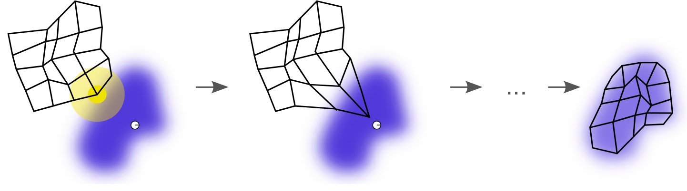

Self-organizing maps
背景
拓扑映射
神经生物学研究表明，不同的感觉输入（运动，视觉，听觉等）以有序的方式映射到大脑皮层的相应区域。这种映射我们称之为拓扑映射，它具有两个重要特性：
- 在表示或处理的每个阶段，每一条传入的信息都保存在适当的上下文（相邻节点）中
- 处理密切相关的信息的神经元之间保持密切，以便它们可以通过短突触连接进行交互
我们建立人工的拓扑映射时也遵循拓扑映射形成的原则：“拓扑映射中输出层神经元的空间位置对应于输入空间的特定域或特征“。
侧抑制现象
在生物神经系统中，存在着一种侧抑制现象，即一个神经细胞兴奋以后，会对周围其他神经细胞产生抑制作用。这种抑制作用会使神经细胞之间出现竞争，其结果是某些获胜，而另一些则失败。表现形式是获胜神经细胞兴奋，失败神经细胞抑制。
自组织（竞争型）神经网络就是模拟上述生物神经系统功能的人工神经网络。 在学习算法上，它模拟生物神经元之间的兴奋、协调与抑制、竞争作用的信息处理的动力学原理来指导网络的学习与工作，而不像多层神经网络(MLP)那样是以网络的误差作为算法的准则。竞争型神经网络构成的基本思想是网络的竞争层各神经元竞争对输入模式响应的机会，最后仅有一个神经元成为竞争的胜者。这一获胜神经元则表示对输入模式的分类[3]。
目标
SOM的主要目标是将任意维度的输入信号模式转换为一维或二维离散映射 ，并以拓扑有序的方式自适应地执行这种变换。在竞争性学习过程中，神经元有选择性地微调来适应各种输入模式（刺激）或输入模式类别。如此调整的神经元（即获胜的神经元）的位置变得有序，并且在该网格上创建对于输入特征有意义的坐标系。我们可以将其视为主成分分析（PCA）的非线性推广。 
如上图所示，蓝色斑点是训练数据的分布，而小白色斑点是从该分布中抽取得到的当前训练数据。首先（左图）SOM节点被任意地定位在数据空间中。我们选择最接近训练数据的节点作为获胜节点（用黄色突出显示）。它被移向训练数据，包括（在较小的范围内）其网格上的相邻节点。经过多次迭代后，网格趋于接近数据分布（右图）。
E.g. Kohonen网络
1. 初始化权重向量
While (特征映射稳定){
2. 采样 - 从输入空间中抽取一个训练输入向量样本 x_i
3. 竞争：寻找获胜神经元 j*
4. 权值调整: 获胜的神经元以及其周围神经元对相似输入模式的响应将增强
}
Kohonen已经证明：在学习结束时．每个权系数向量wj都近似落入到由神经元j所对应的类别的输入模式空间的中心，可以认为权系数向量wj形成了这个输入模式空间的概率结构。所以，权系数向量Wj可作为这个输入模式的最优参考向量。
竞争
与第i个输入最相似的权重向量判为竞争获胜神经元
合作
在神经生物学研究中，我们发现在一组兴奋神经元内存在横向的相互作用。当一个神经元被激活时，最近的邻居节点往往比那些远离的邻居节点更兴奋。并且存在一个随距离衰减的拓扑邻域。我们想为我们的SOM中的神经元定义一个类似的拓扑邻域。 如果是神经元网格上神经元i和j之间的横向距离，我们取 作为我们的拓扑邻域。该函数有几个重要的特性：它在获胜的神经元中是最大的，且关于该神经元对称，当距离达到无穷大时，它单调地衰减到零，它是平移不变的（即不依赖于获胜的神经元的位置）。需要随着时间的推移而减少。常见的时间依赖性关系是指数型衰减：
权值调整
对第i个输入, 调整第j个权值 每个学习权重更新的效果是将获胜的神经元及其邻居的权向量wi向输入向量x移动。对该过程的迭代进行会使得网络的拓扑有序。
网络输出(Winner Takes All)
在每一时刻只有一个输出神经元被激活。这个被激活的神经元称为竞争获胜神经元，而其它神经元的状态被抑制
局限
- 网络训练时,有些神经元始终不能获胜,成为“死神经元”。
- 和ART网络不一样，SOM网络在没有经过完整的重新学习之前，不能加入新的类别。
- 当输入模式较少时，分类结果依赖于模式输入的先后次序。
和K-Means的不同
- 每次只是采样数据
- 一个数据点可以对多个类中心（grid）产生影响
References
- https://www.cnblogs.com/surfzjy/p/7944454.html
- https://en.wikipedia.org/wiki/Self-organizing_map
- https://blog.csdn.net/xbinworld/article/details/50818803